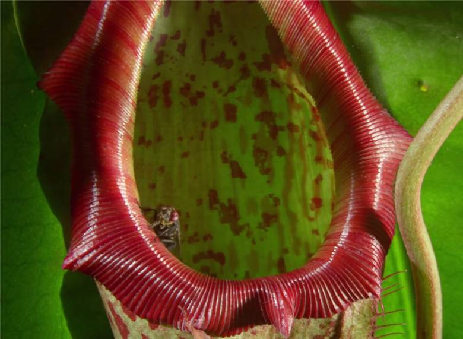
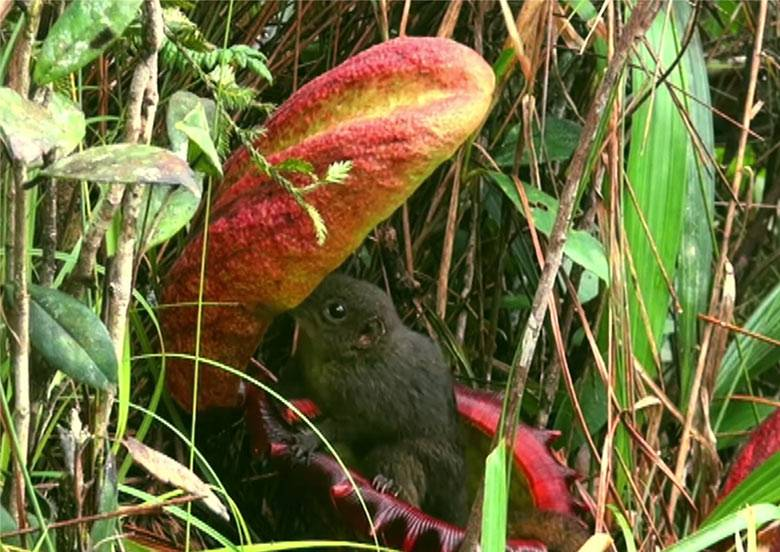
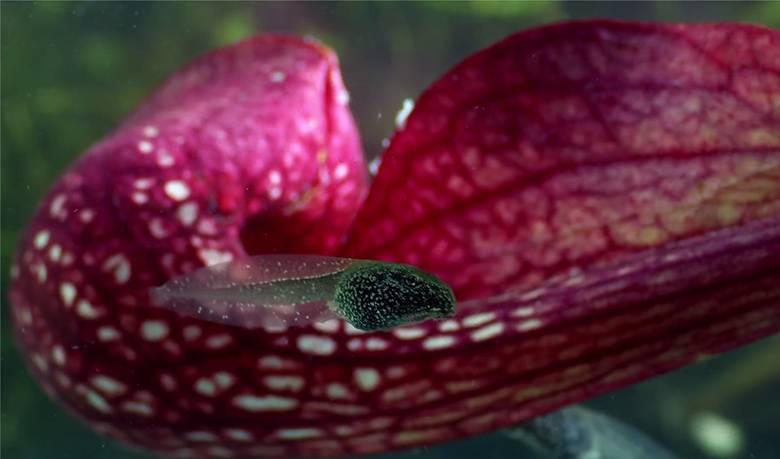
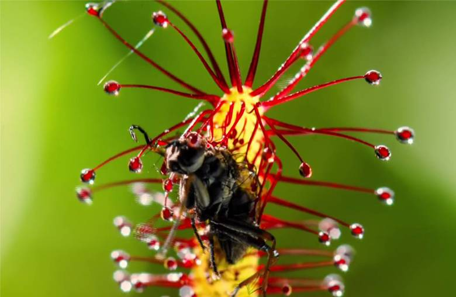
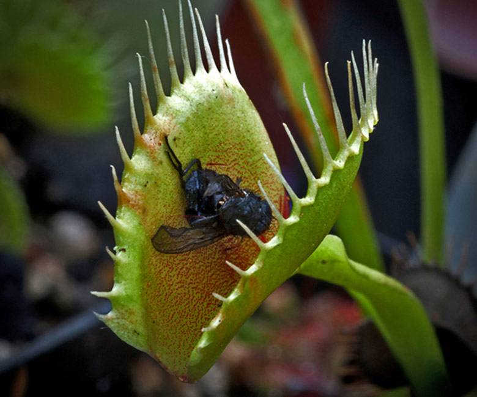
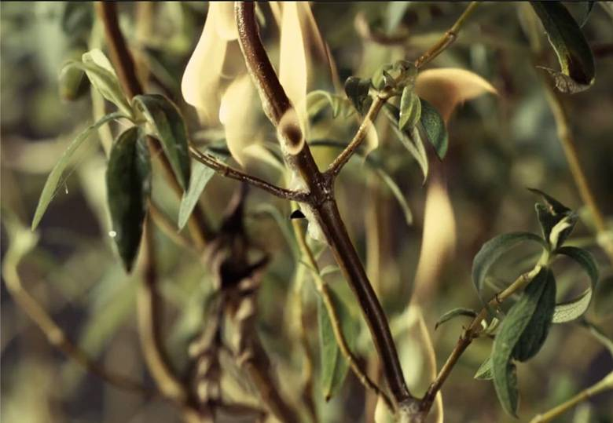

Хижі рослини по праву можна вважати дивом природи. Ці неймовірні рослини — справжні хижаки, вони ловлять
комах і членистоногих, виділяють травний сік, розчиняють жертву і в ході цього процесу отримують поживні
речовини.
Хижих рослин досить багато (науці відомі близько 600 видів), вони мають спеціальні пристосування того чи
іншого виду, які й використовують для ловлі та перетравлювання своїх жертв.
Непентеси-глечики
Ці рослини ростуть на дуже бідних ґрунтах, тому еволюція наділила їх здатністю добувати азот та
необхідні мікроелементи іншим шляхом. Листок своїм забарвленням і запахом заманює комах обіцяючи
їм
смачний обід, і вони його дійсно отримують, але ця їжа стає останньою в їх житті.
Нещасні так
захоплюються трапезою що не помічають, як триматися вже ні за що. Край глечика дуже
гладенький, тому комахи зісковзують і опиняються в пастці. Всередині рослини міститься травний
сік,
який містить мікроскопічні еластичні волокна які надають йому властивості сипучих пісків, тому
чим
сильніше комаха бореться тим більше тоне. А ензими починають розчиняти тіло жертви поки та ще
жива.

Але існують види непентесів які приманюють тварин зовсім для інших цілей. Цей вид називається
“Непентес скатний”. На його кришці рясно виділяється солодкий нектар, на запах якого приходить
тваринка “гірська тупайя”. Вона починає злизувати все що може, стоячи на нижній кришці, але при
цьому не провалюється всередину.
Навіщо ж рослині годувати цього звірка? Річ у тому, що поки “гірська тупайя” вилизує кришки, її
задня частина тіла стоїть прямо над глечиком, а нектар який вона поїдає містить проносне, через
що тваринка випорожняється і її екскременти падають прямо всередину непентеса, і саме це
підживлює рослину.
Ну а з приходом ночі замість “гірської тупайї” нектар непентеса починає
поїдати щур, він так само як тупайя залізає на глечик і його екскременти падають всередину. Але
іноді щур підковзується і сам падає в пастку, завдяки чому у непентеса буває справжнє свято.
Свого роду бонус.

Сарраценії
Сарраценії є близькими родичами непентеса. Вони ростуть в низинах де часто ідуть дощі, а тому
хижі рослини опиняються під водою. Здавалось би що тепер вони приречені на голод, але є один вид
сарраценій який розв'язав цю проблему.
Він здатний полювати не тільки на суші, але і у воді. Кришка рослини створює вузький вхідний
канал який веде у трубу покриту волосками що ростуть в одну сторону. Виходить хитра пастка.
Пуголовки харчуються на поверхні листка, але якщо запливають в пастку то вже не можуть
вибратися. Єдиний шлях вперед на дно воронки, де нещасні й зустрічають свою смерть.

Росянка
Росянка – ще один вид хижих рослин, які так само як непентеси ростуть на бідному ґрунті, а тому
їм нічого не залишилось як почати поїдати комах.
Росянки діють подібно липкої стрічки для ловлі мух. На їх стебельцях ростуть волоски, кожен з
яких
має на своєму кінчику краплину дуже схожу на нектар. Це приваблює комах, які тільки після
приземлення на рослину, виясняють що це зовсім не нектар, а в’язкий клей, який не залишає жертві
жодного шансу вибратися.
Все погіршується тим що, волоски до яких комаха раніше не торкалась
починають пригортатися до неї.
Ну а потім росянка обгортує здобич всім листком, після чого починає розчиняти внутрішні органи
жертви поки та ще жива, і всмоктує поживні речовини листками.
Цікаво що якщо поставити на рослину камінь або папір, то ніякої реакції не буде. А якщо капнути
молоко або приклеїти шматочок м’яса, то росянка відразу приступить до поїдання. Виходить що
реакція провокується речовинами які містять азот. Ця рослина у свій час настільки вразила
Дарвіна, що він написав: “Часом мені здається що росянка це замаскована тварина".

Венерина мухоловка
А зараз піде мова про одну з найзнаменитіших хижих рослин “Венерина мухоловка”. Вона стала
популярною через те що має вигляд справжнього монстра із казок про рослини вбивці.
Мухоловка заманює комах нектаром який розміщений на краях листків. Ближче до центру розміщені
шипоподібні волоски, свого роду детектори. Якщо їх зачепити, то листок миттєво захлопнеться. Ось
тільки якщо зачепити всього один волосок, то нічого не відбудеться, адже це може бути просто
опалий листок, а не комаха. А якщо зачепити два волоски з інтервалом не більше ніж 20 секунд, то
пастка відразу спрацює. Жертва намагаючись вибратися загинає ще більше детекторів через що
листок закривається ще сильніше. А потім рослина починає виділяти сік з вмістом соляної кислоти,
яка розчиняє комаху. Венериній мухоловці буде потрібно 10 днів щоб повністю переварити здобич.

Ладанник
Ладанник із Середземномор’я є справжньою рослиною камікадзе. Він обожнює ні з того ні з цього
влаштовувати пожежу і згорати до тла.
При підвищенні температури повітря до 32 градусів цей
вид починає виділяти легкозаймисте масло,
яке і підпалює ладанник. Вогонь не залишає жодного шансу на виживання.
Суїцидальна рослина окрім себе вбиває ще й всю довколишню рослинність.
Виникає питання: для чого це все потрібно? Виявляється перед тим як влаштувати пожежу ладанник
викидує на землю насіння, покрите вогнетривкою оболонкою. Але для кращого проростання потрібне
добриво, наприклад попіл який утворюється при спаленні рослин.

Ну і непогано було б звільнити місце для нового покоління ладанників. Ось чому рослина себе
спалює. На що тільки не йдуть батьки заради свого потомства. Іноді через рослину самогубця може
згоріти цілий ліс.